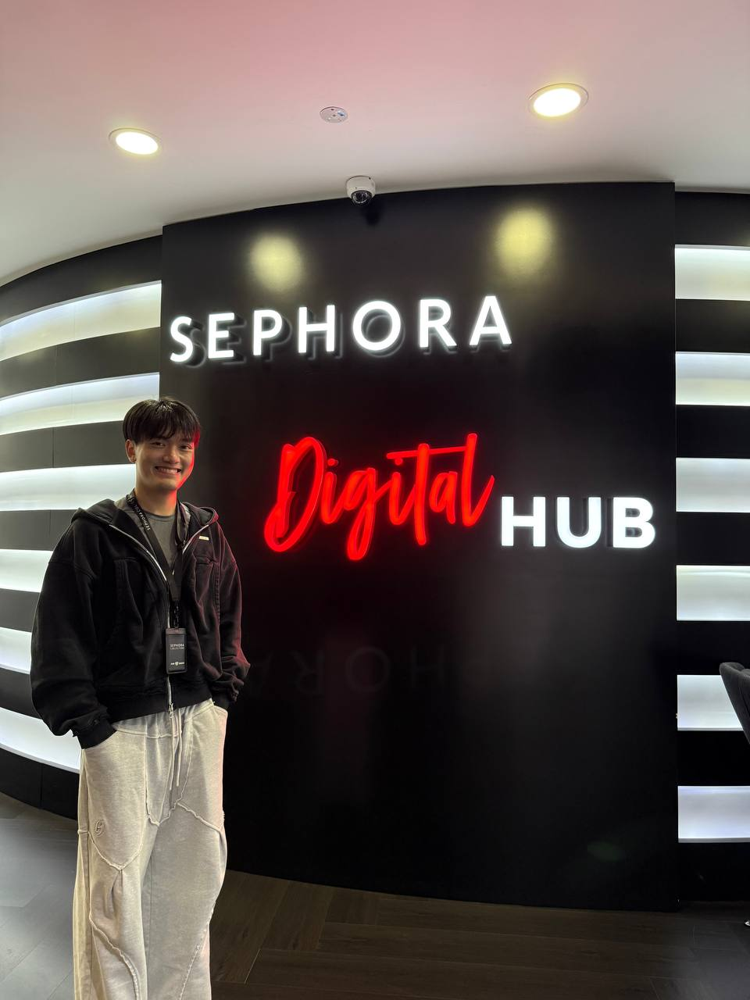
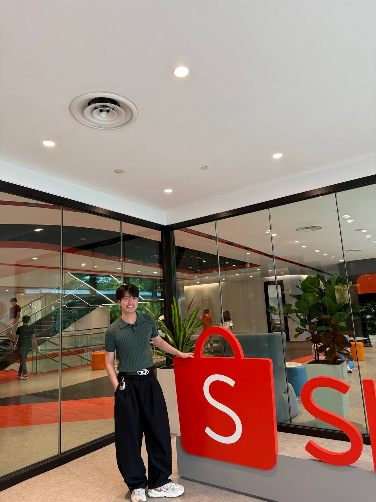
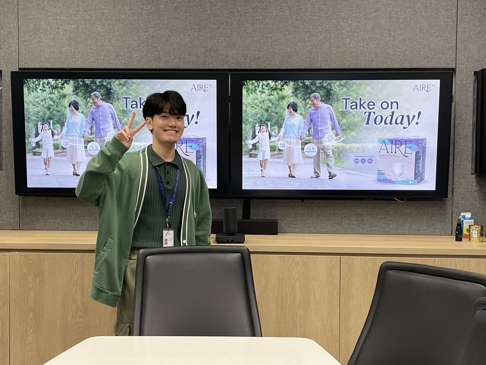

// Hello, I'm
|
Resilient by choice. Data-driven by passion. Always improving.
I arrived in Singapore in May 2015 with a simple goal and a lot to prove. I spent months studying English and Mathematics to sit the S-AEIS (Supplementary Admissions Exercise for International Students) and passed. I was posted to Ang Mo Kio Secondary School, joining Secondary 2 mid-year and spending 2.5 years there before sitting my O-Levels.
I enrolled in a Common Engineering Programme at Ngee Ann Polytechnic and pushed hard in my second year to earn a place in the Diploma in Aerospace Engineering. By graduation, I knew two things: I was not ready for the workforce, and aerospace was not where I wanted to be.
I applied to universities both overseas and locally before choosing Singapore Management University, drawn by the rise of tech and the career path it offered. Eighteen months in, after my first internship, I found a genuine pull toward data and declared a second major in Data Science & Analytics. I graduated with Merit in June 2026.
Today I am working full-time at Sembcorp Industries as a Data & AI Analyst, building things with data in the city that gave me my shot.

Sephora · Tech Data

Shopee · Regional Brand & Growth Marketing

Aire · E-commerce & Analytics
End-to-end dbt + Snowflake analytics pipeline for fintech transaction data. Modular RAW → STAGING → MARTS layers, dimensional star schema models, and 3 interactive KPI dashboard pages. Production-grade CI/CD and data quality testing.
Fintech Transaction Analytics
Analytics Engineering · dbt · Snowflake
Supply chain demand forecasting pipeline using Asurion data. Feature engineering on churn, claims, and lifecycle variables with leakage prevention. XGBoost achieved 23.2% RMSE improvement over linear baselines using time-series-aware cross-validation.
Currently working at Sembcorp Industries as a Data & AI Analyst. Always open to interesting conversations about data, analytics, and AI.